Nick Thompson
Product Designer
A bit about me
- At Asda, I was mainly responsible for the UX design and build of supplier-funded pages across the website and app.
- Now, I'm Lead Digital Designer at Infoserve, leading UX and web projects from research to launch.
- What I'm looking for: owning a product in-house, testing with customers, and improving it over time.
I learnt Spanish and taught English to primary and secondary school students on a government teaching programme. It's where I learnt to explain things clearly, and how I still mentor: show it, do it together, then let them do it.
How I work, and where AI fits
Understand
Stakeholders, data, and an audit of what exists.
AI: summarising calls and compiling feedback, every summary checked.
Explore
Journeys and options, with honest trade-offs.
Prototype and test
In Figma, with real people.
AI: turning designs into working prototypes faster.
Launch and improve
Developers in early, measure, and keep supporting after launch.
AI speeds up the making. The research and the decisions stay with me.
Five projects across the areas you work in
Treasured Possession: Instant Quote Tool
A mobile-first quote and checkout journey with a live running total, giving customers transparency and control over what they pay.
The customer problem: there was no running total, so people only saw the full cost once they reached the basket, and anyone who left couldn't be followed up. I led it from research and order data through prototyping and usability testing, balancing the client's goal of capturing leads with what customers needed. In progress.
The Problem
The page promised an "instant price", but the first total was in the basket.
- Every field, including two dates, before "Calculate Order".
- Item prices showed, but no running total.
- People who left left no trace, so the business couldn't follow up.
Goals
More orders · a lead for every quote · fewer drop-outs
Constraints
Fixed budget · WooCommerce · small client team
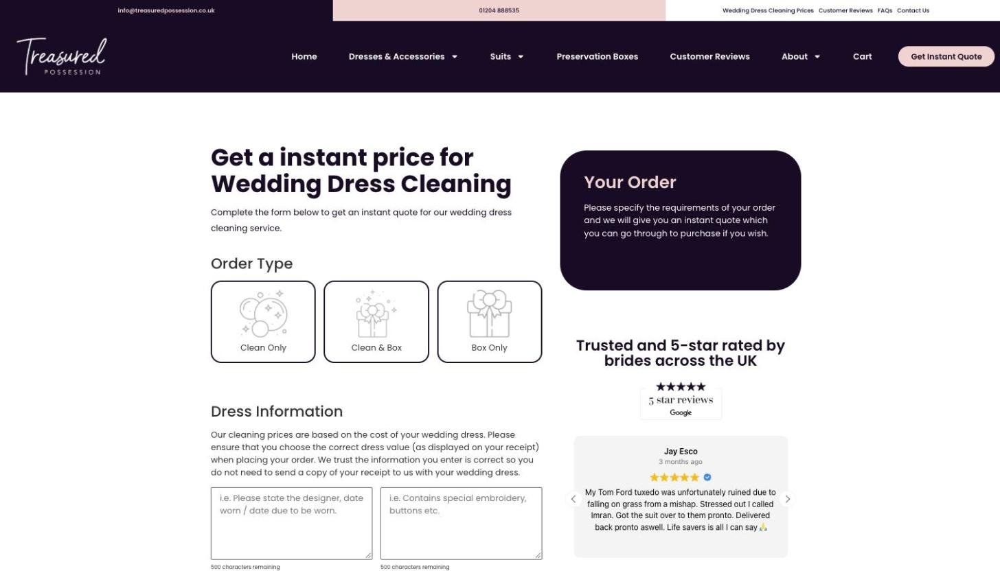
Research
Every competitor showed a total within two clicks. None asked for an email first.
What I took from competitors
Re:Finery: a price by value band can still feel instant. Elsie May: one line of reassurance takes the fear out of choosing.
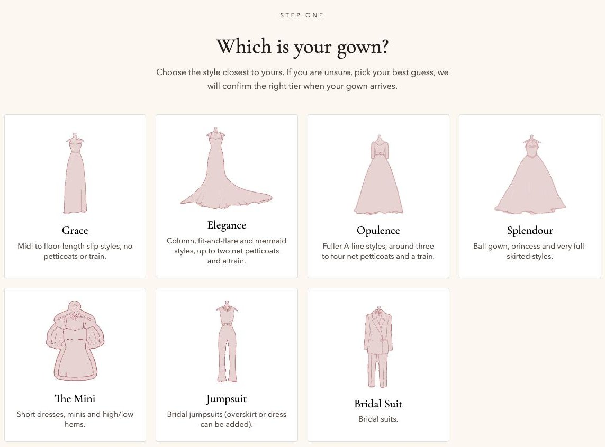
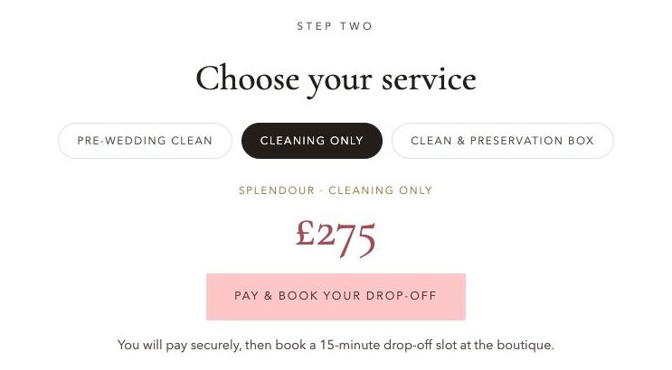
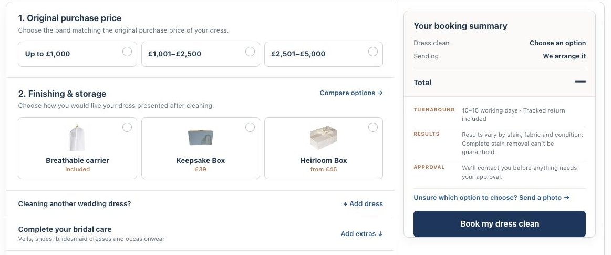
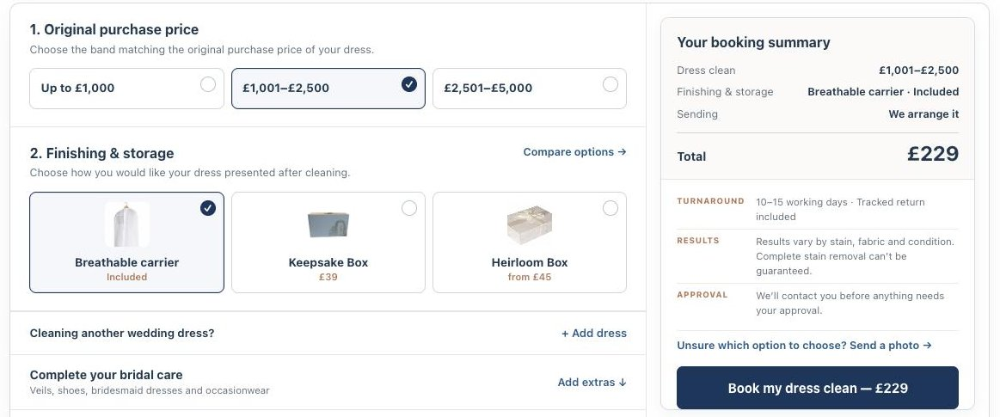
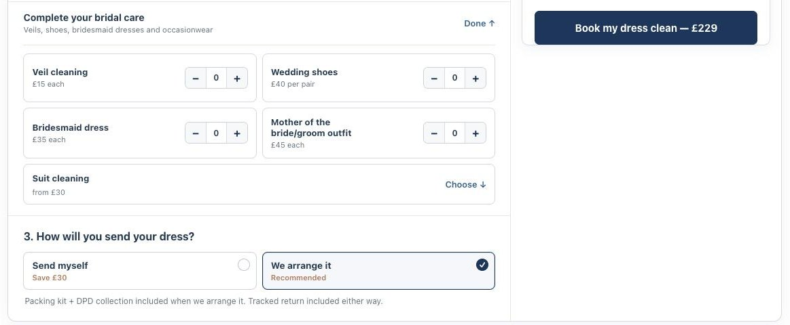
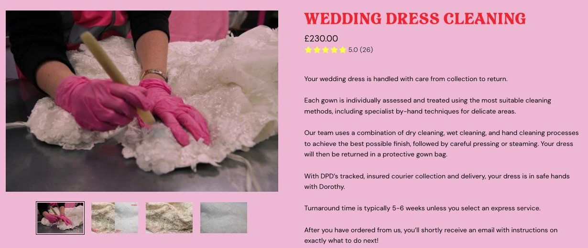
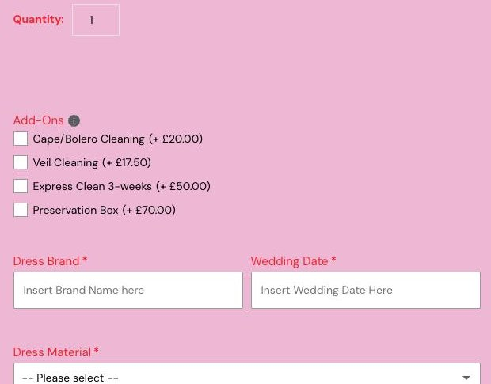
Low-fidelity designs
A clickable prototype, built with our developer so every idea was feasible.
- Split by what's being sent. Quote first, booking second.
- Order data set the defaults: box size follows dress style, so it's chosen for you.
- Built with Tim, our developer, checking each idea worked in WooCommerce.
Where AI helped
It sped up the designing and the roll-out.
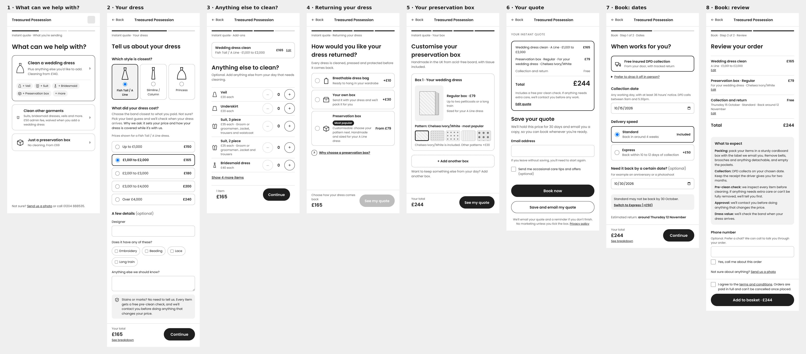
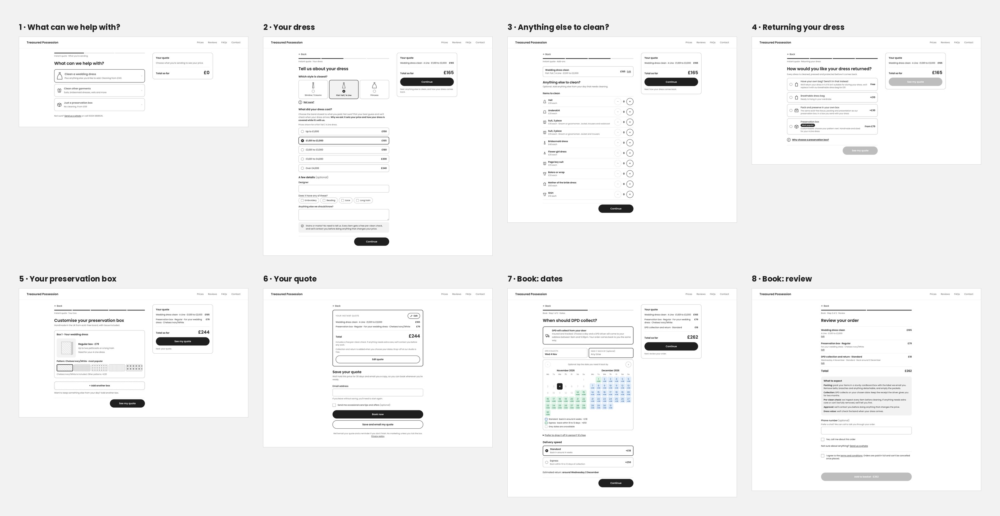
Testing
Colleagues outside the project worked through real scenarios on the prototype.
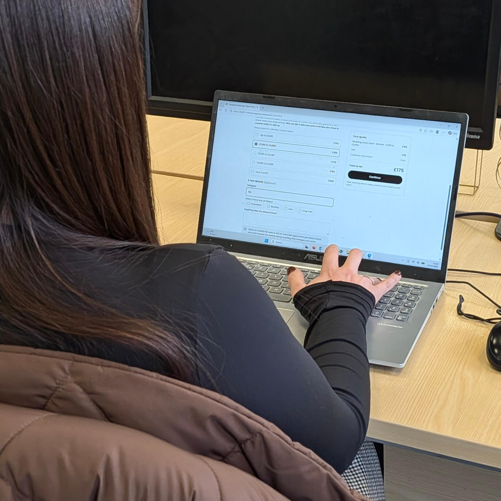
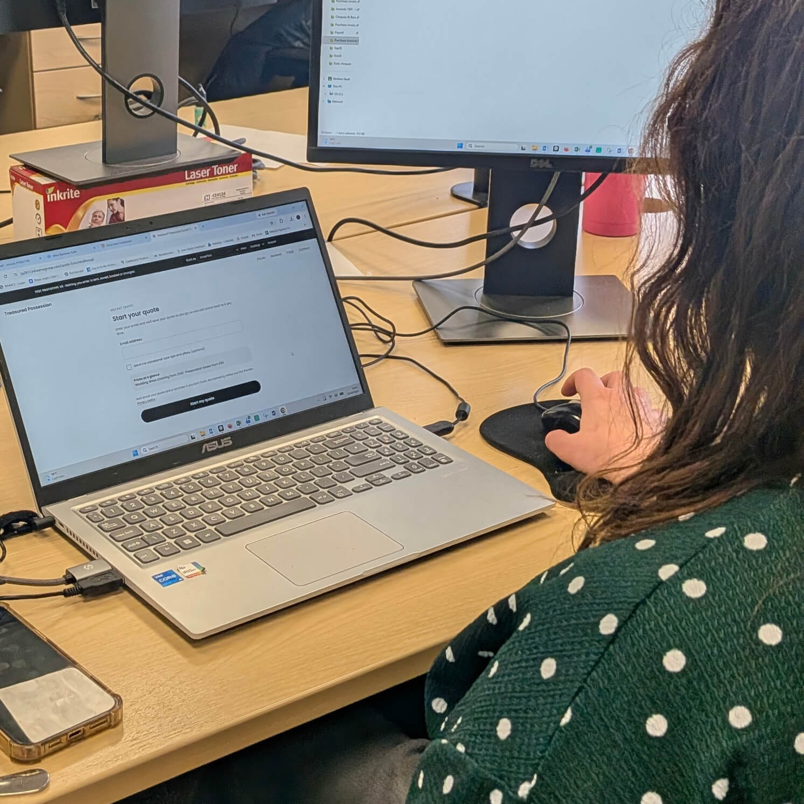
Client review
I took the findings back to the client, and we agreed the changes together.
Price first, not email first
They wanted an email before any price. Competitors and the extra effort said price first. Too few orders for an A/B test, so we launch price first and keep email first ready to test.
"Own box" becomes a service
Renamed "Pack and present with your own box", so the £30 is clearly for expert packing.
Fewer charges that feel like penalties
The admin fee removed, and the breathable bag shown as included.
A follow-up for saved quotes
10% off after 7 days, and a reminder before the 30-day price hold ends.
High-fidelity designs
Mobile first, on the client's brand, accessible to WCAG 2.2 AA.
Results
Too early for results, so I've set up how we'll measure them.
The baseline
12 months of orders: £251 average order, about 23 paid orders a month, 12% failed or cancelled.
What we'll measure
Quote visitors who order · contactable leads captured · orders recovered by follow-up emails.
When
Eight weeks after launch, compared with the same period last year, for wedding season.
What the client wants next
Seasonal box designs · suit preservation as its own service · preservation as a gift
Asda Design Guidelines: Supplier Design Hub
A B2B website where suppliers find the specs, downloadable PSD templates and accessibility rules they need, designed around their journey and improved through testing.
Suppliers were moving to self-service, but PDF guidelines meant rejected banners and repeated questions. I rebuilt them as an interactive hub, kept it and the templates aligned with Asda's design system through the rebrand, rebuilt it with the CMS product owner, and tested it with suppliers, which led to the Artwork Checker.
The Problem
Suppliers were moving to self-service, but the guidelines were PDFs.
- Organised around internal logic, not how suppliers worked.
- Account managers saw rejected media and the same questions again and again.
- I owned the specs, templates and WCAG rules, so I could see where they broke down.
Version 1: the hub
I replaced the PDFs with an interactive hub, built around how suppliers browse.
A page per format
Examples shown in place on Asda.com, desktop and mobile.
Accessibility built in
The WCAG rules suppliers had to meet, on every page.
Templates and toolkit
Downloadable PSD templates and the UI toolkit I designed.
Rebrand and new CMS
I kept it aligned through a rebrand, then rebuilt it for a new CMS.
The rebrand
Guidelines and PSD templates updated to Asda's new design system and UI.
The new CMS
With the product owner, I kept the structure suppliers knew and rebuilt each page from the CMS's standard components.
Trade-off: less bespoke layout, for pages the team could maintain without me.
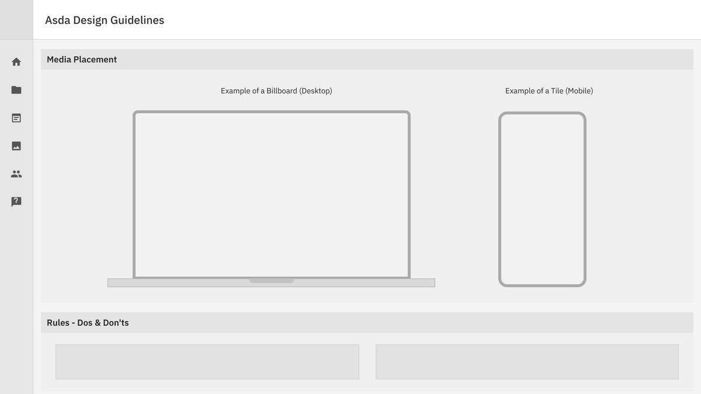
Testing
Five suppliers, one task: find the specs, check accessibility, download the template.
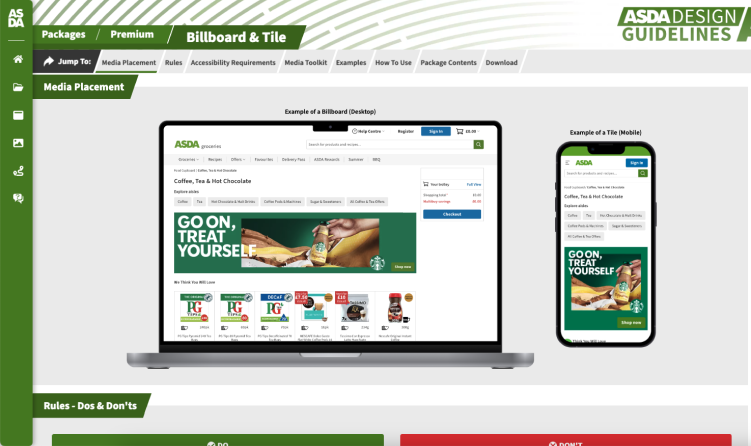
The Artwork Checker
The finding everyone had missed: suppliers couldn't see how artwork would look on site.
- A banner supplied at 1000px could show at 400px.
- Asda's roundels covered anything outside the safe zone.
- The Checker detects the template and shows artwork at real size, with safe zones.
Results
Fewer rejections, fewer questions, and a tool that outlasted the project.
It outlasted the project
The Artwork Checker became part of Asda's internal approval process, used before any banner went live.
Checked in follow-up sessions
"Jump to" meant less scrolling. The progress bar meant more suppliers read to the end.
LHA London: Room Search and Enquiries
Search, filters and room cards that help applicants find an available room before they get in touch.
The customer problem: applicants enquired blind about rooms that were full. I led it end to end, from competitor research to the build, and measured the result in analytics: browse first, enquire second.
The Problem
One generic enquiry form. LHA wanted applicants to see which rooms were available before enquiring, to cut unqualified enquiries.
- No availability, photos or filters, so people asked about full rooms.
- LHA vets everyone, so no instant booking.
- Search by area and room type, with room cards showing photos, price and availability.
- Full rooms go to a waiting list, with similar rooms suggested.


Results
Better enquiries, not more of them.
After launch
The LHA team updates prices and availability themselves, without a developer.
We've already seen more confident user engagement and higher-quality enquiries.
Google Analytics, March to October 2026 vs the same period in 2025.
Asda Experiential Hubs: Seasonal Brand Hubs
A repeatable seasonal experience that gave customers a reason to visit and brands a lower-cost way in.
A strategic opportunity: smaller brands couldn't afford a Branded Zone. I took it from idea to a pilot, then a template, improving the competition each event and planning journeys in from the Rewards app.
The Problem and Opportunity
Brands with smaller budgets had nothing to buy, and Asda was missing revenue.
The Campaigns Team
Ran all funded media on Asda.com: around 3,000 supplier campaigns a year.
What Branded Zones were
Bespoke brand pages that suppliers paid for, which my team designed and built.
The gap
Effective but expensive. Sales kept hearing brands wanted a page but didn't have the budget.
A Branded Zone: LEGO at Christmas.
The Idea
One shared hub, several brands buying in, owned by Asda and tied to seasonal events.
- Worth a visit: an instant-win competition, brand shops and playful carousels, not just a product list.
- Little asked of suppliers: products, logos and banners. We designed and built the rest.
- Owned by Asda, so I could design for customers, not around one brand.
Sales
Needed engagement, and a clear return for suppliers.
Senior management
Needed brand consistency, and something that could scale.
The Pilot
The King's Coronation: The Big Get-Together Bus Tour.
- Designed and built it, from wireframes to front end.
- "Find the Winning Window", built with third-party agencies.
- No win? You saw the products in your window, so every play led back to shopping.
- Strong uptake from suppliers, and stakeholders behind the format.
Making It Repeatable
From one page to a template for every season.
- Mapped every way in, including the Rewards app.
- Wireframes shared early, so problems surfaced while cheap to fix.
- Same structure, new competition each event, with Rewards Cashpot prizes.


Results
A regular product across Asda's biggest events, and a new revenue stream.
Next time
A/B test the competition and layout within one event, and track product views and basket adds, not just entries.
Asda Pets: Category Hub
A category hub that puts finding the right product first, with funded brand content built in.
A permanent brand takeover was getting in the way of shoppers. I mapped the journeys, designed three options and built agreement with senior merchandising around navigation first.
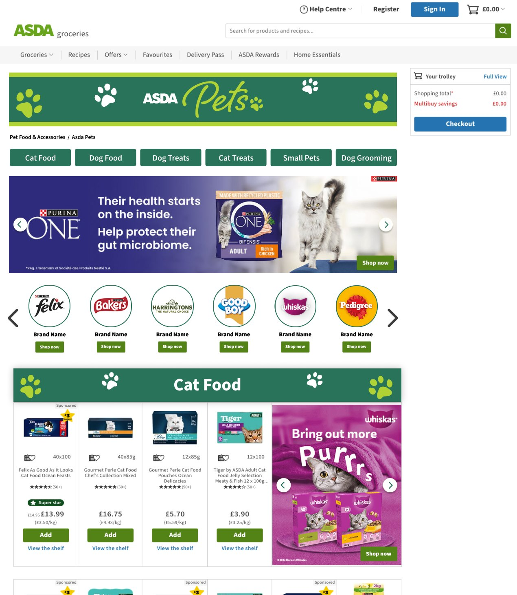
The Problem
A permanent brand takeover was getting in the way of shoppers.
- Sold as a fixed piece of media, with a "skin" over the whole category.
- It made the category look different from the rest of Asda.com.
- It raised a bigger question: how should takeovers work in future?
Shoppers
Needed the right food or treats for their pet, fast.
Merchandising
Owned the category pages and product ranges.
Brands
Paid for visibility, and needed clear slots to buy into.
Mapping the Journey
Funded placements as other routes to products, not obstacles in front of them.
Three Options
Three options, from least to most supplier content.
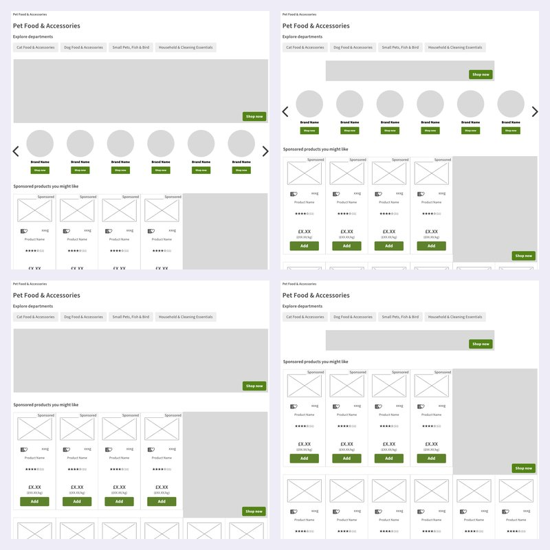
Sponsored slots on the existing category page.
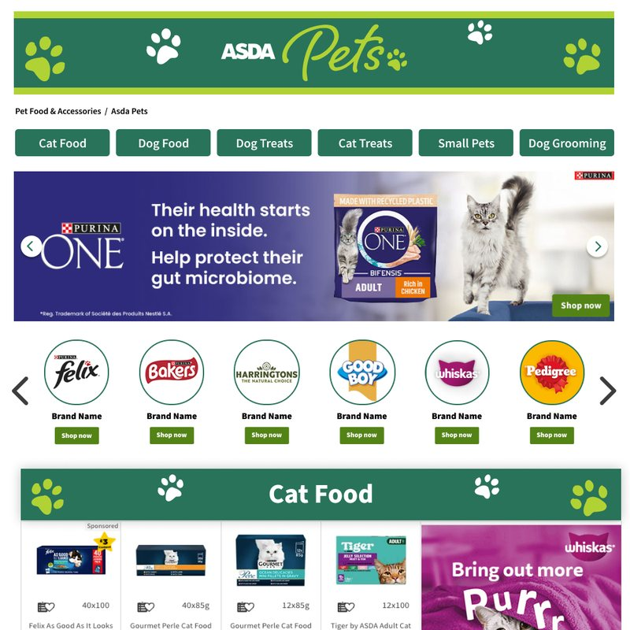
A hub with category buttons, so shoppers go straight to what they need.
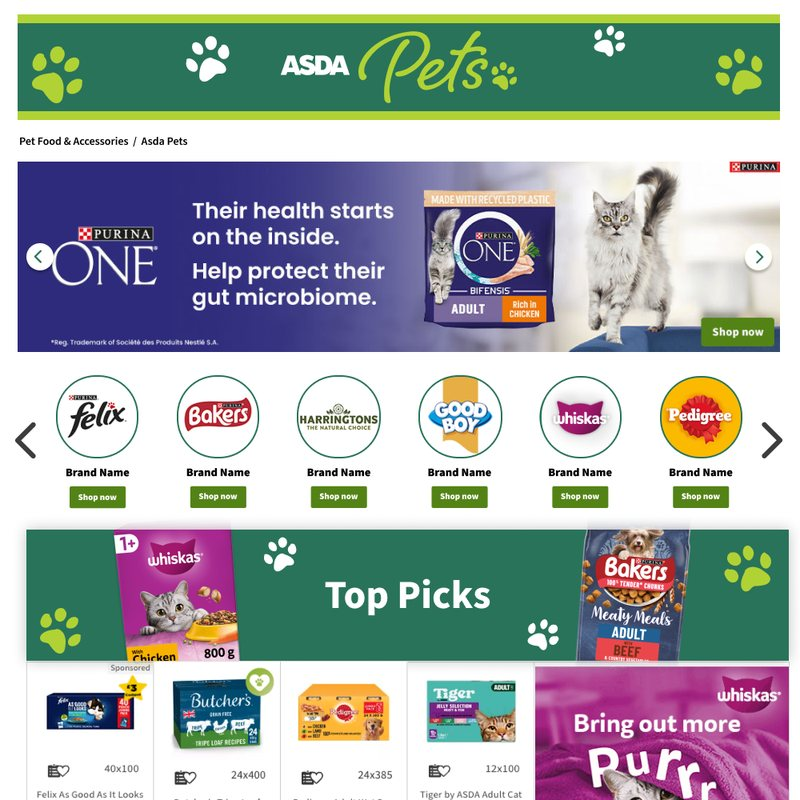
No category buttons, more funded content, built around Top Picks.
Agreeing the Balance
With senior merchandising, we agreed navigation first and funded slots below.
What merchandising brought
Insight into which merchandising performed better on their pages.
Agreed
The hub with navigation buttons. Funded slots kept, but limited so they didn't get in the way.
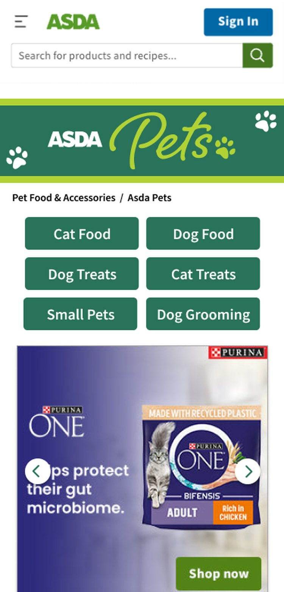
Questions?
nickthompsondesign.co.uk